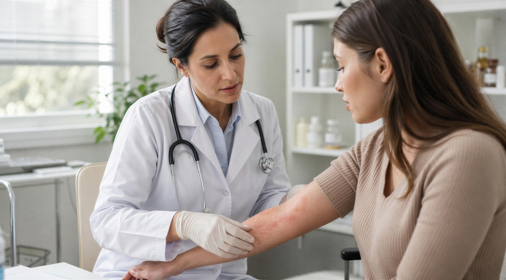
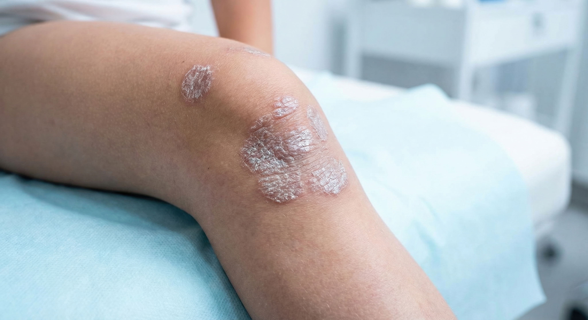

CID L40
Psoríase
Entenda os sinais, as diferentes manifestações e como cuidar da doença.

O que é a psoríase?
A psoríase é uma doença inflamatória crônica, não contagiosa e de evolução cíclica, ou seja, os sintomas podem melhorar e voltar a aparecer em diferentes períodos. As manifestações e a gravidade variam de pessoa para pessoa, e as lesões podem surgir em diferentes regiões do corpo.1-3
As lesões mais características são manchas avermelhadas e arredondadas, geralmente cobertas por escamas de aspecto branco-prateado. Elas aparecem com frequência no couro cabeludo, cotovelos, joelhos e região inferior das costas, mas também podem atingir mãos, pés, unhas e região genital.1,2
A predisposição genética, associada a fatores ambientais e comportamentais, pode contribuir para o aparecimento ou agravamento das lesões. Entre os possíveis gatilhos estão estresse, infecções, consumo de álcool, tabagismo, clima frio, obesidade, determinados medicamentos e lesões na pele.1-3
A psoríase não tem cura, mas existem diferentes possibilidades de tratamento que ajudam a controlar seus sinais e sintomas e melhorar a qualidade de vida.1-3
Quais são os sinais e sintomas da psoríase?
As manifestações podem variar de acordo com o tipo, a localização e a gravidade da doença. Entre os sinais e sintomas estão:1-4
Placas avermelhadas
Descamação
Coceira
Queimação
Ardor
Inflamação
Dor
Rachaduras na pele
A coceira pode ter impacto importante no dia a dia. Quando persistente, pode prejudicar o sono, a concentração, o trabalho e o bem-estar emocional.4
Ferramentas como o Índice de Qualidade de Vida em Dermatologia (DLQI) podem ajudar a avaliar quanto sintomas como coceira, dor e ardor interferem na vida da pessoa com psoríase.4
A psoríase pode aparecer em diferentes partes do corpo?
Embora as placas possam aparecer nas regiões mais características, algumas áreas apresentam particularidades importantes. A doença pode atingir, por exemplo, couro cabeludo, unhas, região genital, palmas das mãos e plantas dos pés.
Algumas dessas localizações também podem estar relacionadas a maior impacto funcional ou a sinais que merecem acompanhamento mais próximo.1
Psoríase no couro cabeludo
A psoríase do couro cabeludo pode se manifestar como placas avermelhadas e espessadas, cobertas por escamas branco-prateadas. As lesões podem ultrapassar a linha do cabelo e alcançar a testa, as orelhas e a região posterior do pescoço. Cerca de 80% das pessoas com psoríase podem apresentar sintomas nessa região.5
A descamação pode ser confundida com caspa e provocar constrangimento. Também pode ocorrer queda de cabelo, geralmente relacionada ao processo inflamatório e a fatores como coçar ou irritar repetidamente o couro cabeludo. Com o tratamento adequado, o cabelo pode voltar ao normal.5
Alguns cuidados podem ajudar: evitar coçar, lavar e pentear os cabelos com delicadeza, manter as unhas curtas e evitar produtos que irritem o couro cabeludo, como determinadas colorações, produtos de alisamento e sprays.6,7
O tratamento costuma envolver inicialmente terapias tópicas, como shampoos, loções ou géis específicos. Quando a doença é moderada ou grave ou não responde adequadamente ao tratamento tópico, outras estratégias podem ser consideradas pelo dermatologista.5
Psoríase nas unhas
A psoríase ungueal pode comprometer tanto as unhas das mãos quanto as dos pés. A unha pode crescer de forma anormal, ficar mais espessa, apresentar descamação, mudança de cor, deformações e, em alguns casos, descolar do leito ungueal.1,8,9
Outras alterações incluem pequenos orifícios ou depressões, estrias e manchas amarelo-alaranjadas. Em alguns pacientes, o comprometimento também pode provocar dor e interferir significativamente na qualidade de vida.8,9
A presença de alterações nas unhas merece atenção especial porque existe uma associação importante entre psoríase ungueal e artrite psoriásica. Pessoas com sinais de distrofia ungueal apresentam risco maior de desenvolver comprometimento articular.9
Por isso, dor, inchaço ou rigidez nas articulações associados a alterações nas unhas devem ser informados ao médico.8,9
Psoríase genital
A psoríase também pode aparecer na região genital e, em algumas pessoas, essa pode ser a única região afetada. Ela não é uma infecção sexualmente transmissível e não é contagiosa. Além dos órgãos genitais, as lesões podem atingir a dobra entre as coxas e a área genital, a região entre as nádegas, a pele ao redor do ânus, o púbis e a parte interna superior das coxas.1,10,11
Entre os sintomas estão coceira, queimação, ardência e dor. Calor, suor e atrito podem piorar o desconforto. Como a pele dessas regiões é delicada, fissuras podem favorecer infecções bacterianas ou fúngicas.10
O impacto pode ir além dos sintomas físicos, interferindo na autoestima, na percepção do próprio corpo e na vida íntima. Apesar do possível constrangimento, conversar abertamente com o dermatologista é importante para que o tratamento seja adequado à região afetada.10,11
O tratamento pode incluir medicamentos tópicos e, quando não há resposta adequada ou existem outras manifestações da doença, terapias sistêmicas podem ser consideradas.1,10,11
Psoríase palmoplantar
A psoríase palmoplantar afeta as palmas das mãos e as plantas dos pés. Entre as manifestações relatadas estão coceira, dor, fissuras e, em algumas apresentações, pústulas.1,12,13
Como mãos e pés são fundamentais para tarefas cotidianas, a doença pode interferir na mobilidade, no autocuidado e em outras atividades da rotina. A dor e a coceira persistentes podem ter impacto expressivo sobre a qualidade de vida.12-14
Os sintomas podem piorar com fatores como mudanças sazonais, contato com produtos irritantes, detergentes, fricção, trauma, tabagismo e estresse.12,15
A psoríase palmoplantar é diferente da pustulose palmoplantar, embora ambas possam atingir mãos e pés. A avaliação dermatológica ajuda a diferenciar as condições e definir o tratamento adequado.15
A psoríase é uma doença inflamatória que pode ir além da pele.
Em algumas pessoas, o processo inflamatório também compromete as articulações, levando ao desenvolvimento da artrite psoriásica (AP).16
A artrite psoriásica pode causar dor, rigidez e inchaço nas articulações, além de fadiga, redução da mobilidade e prejuízo nas atividades diárias e na qualidade de vida.16
Estima-se que até cerca de 30% das pessoas com psoríase possam desenvolver artrite psoriásica ao longo da vida. Algumas características cutâneas, incluindo comprometimento do couro cabeludo e das unhas, têm sido associadas a risco aumentado de manifestações articulares.17,18
Quais sinais podem indicar progressão para artrite psoriásica?
A progressão pode começar de forma discreta, e alguns sintomas articulares podem passar despercebidos nos estágios iniciais. Por isso, pessoas com psoríase devem observar mudanças que possam sugerir envolvimento das articulações.16,18
Entre os sinais de atenção estão:16-19
- dor ou inchaço nas articulações;
- rigidez principalmente ao acordar;
- dor muscular;
- fadiga;
- alterações nas unhas.
O acompanhamento próximo é especialmente importante quando há alterações ungueais ou lesões em áreas como o couro cabeludo. A identificação precoce dos sintomas articulares e o acompanhamento integrado entre dermatologista e reumatologista podem ajudar a reduzir a progressão e o comprometimento funcional.16-19
Manter a doença controlada e comunicar rapidamente mudanças nos sintomas ao médico são medidas importantes para evitar que sinais de progressão sejam ignorados.17-19
Como é feito o diagnóstico da psoríase?
Como existem diferentes tipos e localizações da doença, a avaliação de um dermatologista é fundamental para identificar as características das lesões, classificar a psoríase e indicar o tratamento mais adequado.1
Alterações persistentes na pele, couro cabeludo, unhas, mãos, pés ou região genital devem ser avaliadas, especialmente quando acompanhadas de coceira, descamação, dor ou sintomas recorrentes.
Também é importante informar ao médico a presença de dor, rigidez ou inchaço articular, pois esses sintomas podem indicar comprometimento além da pele.16,19
Como é feito o tratamento?
O tratamento depende do tipo de psoríase, da gravidade, das regiões afetadas e do impacto da doença na vida de cada pessoa. Existem opções tópicas, sistêmicas e biológicas, e a escolha deve ser individualizada pelo dermatologista.20,21
A adesão correta ao tratamento é importante para manter a inflamação sob controle, reduzir os sintomas e diminuir o risco de complicações. Mudanças nos sintomas devem ser comunicadas ao médico para que a estratégia possa ser reavaliada quando necessário.20
Mesmo quando as lesões melhoram, a psoríase continua sendo uma doença crônica. Por isso, o acompanhamento deve ser mantido conforme a orientação médica.20,21
O que é fototerapia?
A fototerapia é uma opção utilizada principalmente em alguns casos de psoríase moderada ou grave. O tratamento envolve a exposição controlada das áreas afetadas da pele à luz ultravioleta (UV), sempre sob supervisão de profissionais especializados.1,22
Podem ser utilizadas luzes UVA ou UVB. A UVB possui comprimento de onda menor e atua mais superficialmente na pele, enquanto a UVA penetra mais profundamente e, quando usada como terapia, pode exigir a utilização de um medicamento que sensibiliza a pele à luz.1,22
A luz UV pode ajudar a reduzir a inflamação e desacelerar a produção excessiva de células da pele, contribuindo para o alívio dos sintomas.23
O método, o número de sessões e a duração do tratamento variam de acordo com as regiões afetadas, o tipo de pele e a resposta individual.
O procedimento deve ser acompanhado por um dermatologista.22,23
Fototerapia NÃO é bronzeamento artificial
As cabines de bronzeamento artificial não substituem a fototerapia. Elas não permitem o mesmo controle sobre o espectro e a dose de radiação aplicada à pele e podem trazer riscos à saúde.1,23
A fototerapia também pode causar efeitos como ressecamento e coceira e, devido à exposição à radiação ultravioleta, exige acompanhamento dermatológico regular.23
Viver bem com psoríase
Conviver com a psoríase envolve mais do que tratar as lesões visíveis. Por ser uma condição crônica, o cuidado deve incluir acompanhamento médico contínuo, adesão ao tratamento e atenção ao bem-estar físico e emocional.20,21
Hábitos como:
- alimentação equilibrada
- atividade física adequada
- sono de qualidade
podem contribuir para o bem-estar geral. Evitar tabagismo e consumo excessivo de álcool e buscar maneiras de administrar o estresse também fazem parte dos cuidados associados à doença.20,21
O impacto emocional não deve ser ignorado. A psoríase pode interferir na autoestima e na convivência social, especialmente quando afeta áreas visíveis ou regiões como couro cabeludo, unhas e genitais. Apoio psicológico, grupos de pacientes e uma rede de apoio podem ajudar a lidar com esses efeitos.20,21
O objetivo do cuidado é controlar a doença como um todo, acompanhar possíveis sinais de progressão e buscar uma qualidade de vida cada vez melhor.20,21
Referências
1. Sociedade Brasileira de Dermatologia. Psoríase. Disponível no portal da SBD. Acesso em 2024.
2. National Psoriasis Foundation. About Psoriasis. Acesso em setembro de 2024.
3. National Library of Medicine. Psoriasis. StatPearls - NCBI Bookshelf. Acesso em setembro de 2024.
4. National Library of Medicine. The impact of itch symptoms in psoriasis: results from physician interviews and patient focus groups. Acesso em setembro de 2024.
5. National Library of Medicine. Management of scalp psoriasis: current perspectives. Acesso em outubro de 2024.
6. American Academy of Dermatology Association. Scalp psoriasis: tips for managing. Acesso em outubro de 2024.
7. American Academy of Dermatology Association. Scalp psoriasis: 10 ways to reduce hair loss. Acesso em outubro de 2024.
8. National Institute of Arthritis and Musculoskeletal and Skin Diseases. Psoriasis. Acesso em setembro de 2024.
9. The Journal of Rheumatology. Nail Psoriasis: Diagnosis, Assessment, Treatment Options, and Unmet Clinical Needs. Acesso em setembro de 2024.
10. American Academy of Dermatology Association. How can I treat genital psoriasis? Acesso em setembro de 2024.
11. National Psoriasis Foundation. Genital Psoriasis. Acesso em setembro de 2023.
12. National Library of Medicine. Palmoplantar Psoriasis. StatPearls - NCBI Bookshelf. Acesso em outubro de 2024.
13. National Library of Medicine. Clinical characteristics and associations of palmoplantar pustulosis: an observational study. Acesso em outubro de 2024.
14. NIH. Palmoplantar psoriasis is associated with greater impairment of health-related quality of life compared to moderate-to-severe plaque psoriasis. Acesso em outubro de 2024.
15. Cleveland Clinic. Psoriasis on Hands & Feet (Palmoplantar): Causes & Treatment. Acesso em outubro de 2024.
16. Brasil. Ministério da Saúde. CONITEC. Protocolo Clínico e Diretrizes Terapêuticas - Artrite Psoriásica. Brasília: Ministério da Saúde, 2021.
17. Fratton Z, et al. Skin and nail predictors of psoriatic arthritis development: A holistic overview integrating epidemiological and physiopathological data. Journal of Clinical Medicine. 2024;13(22):6880.
18. Mease PJ, et al. Prevalence of rheumatologist-diagnosed psoriatic arthritis in patients with psoriasis in European/North American dermatology clinics. Journal of the American Academy of Dermatology. 2013;69(5):729-735.
19. Ranza R, et al. Prevalence of psoriatic arthritis in a large cohort of Brazilian patients with psoriasis. The Journal of Rheumatology. 2015;42(5):829-834.
20. Romiti R, Carvalho AVE, Duarte GV, et al. Brazilian Consensus on Psoriasis 2020 and Treatment Algorithm of the Brazilian Society of Dermatology. Anais Brasileiros de Dermatologia. 2021;96(6):729-757.
21. Sociedade Brasileira de Dermatologia. Consenso Brasileiro de Psoríase 2020. 2020.
22. National Library of Medicine. A clinical review of phototherapy for psoriasis. Acesso em setembro de 2024.
23. National Library of Medicine. Psoriasis: Learn More - Does light therapy (phototherapy) help reduce psoriasis symptoms? InformedHealth.org - NCBI Bookshelf. Acesso em setembro de 2024.
Material destinado ao público leigo. 2026 © Direitos Reservados Novartis Biociências S/A – Proibida a reprodução total ou parcial não autorizada. Atualizado em 28 de agosto de 2026.
BR-XXXXX